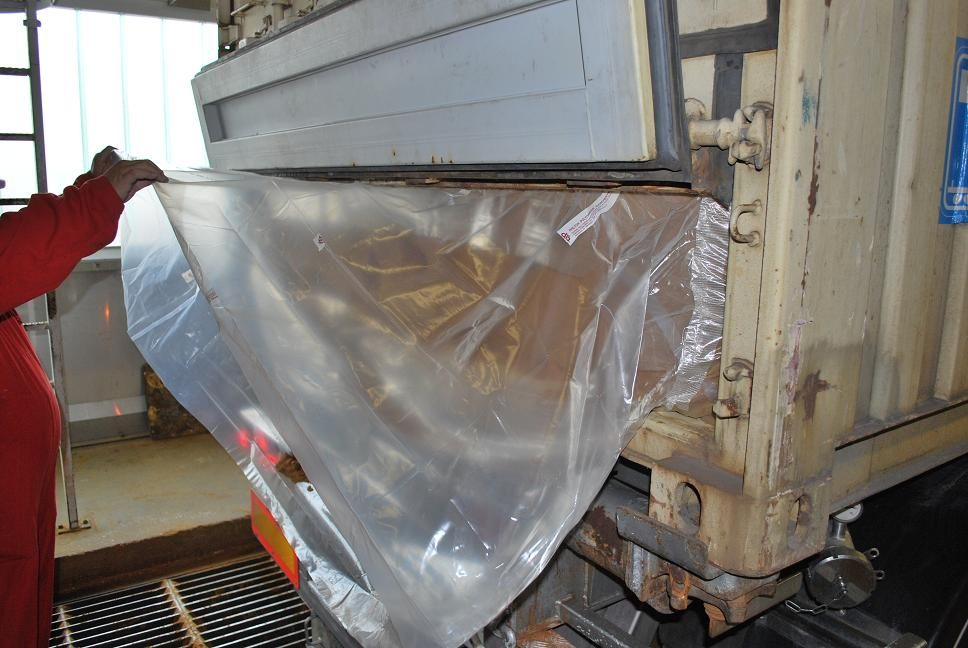
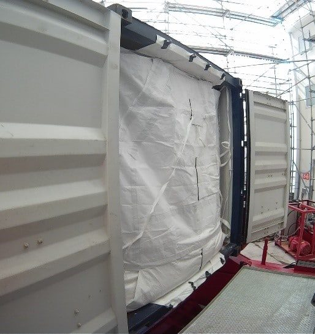
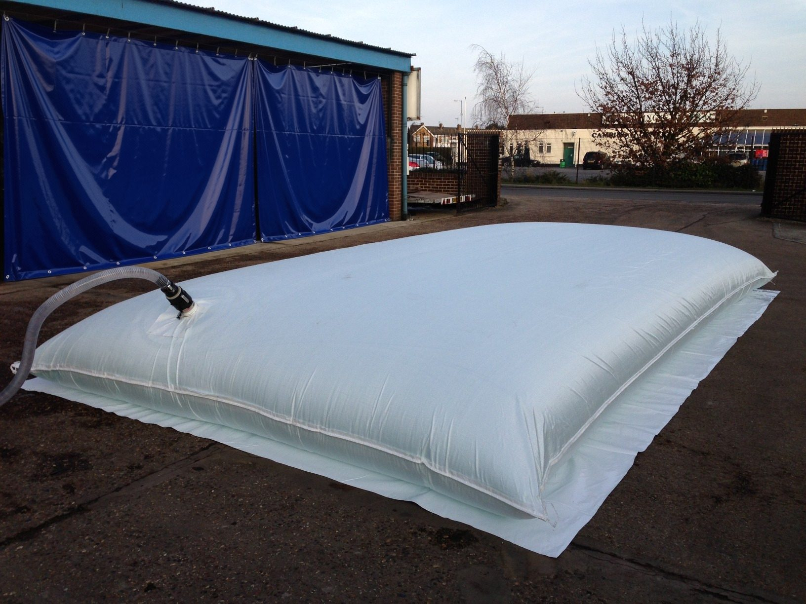

Industry
Bulk Packaging for Agriculture & Commodities
From container liners for export-grade grain to on-farm bladder tanks for water and fertiliser — packaging specified around the commodity and the season, not a generic sheet of polythene.
The challenge
Bulk commodities move seasonally, storage needs move with them
Export-grade grain needs a moisture-tight container liner at harvest; the same farm may need flexible on-site storage for fertiliser or livestock water in a different season. Our range covers both ends — certified export packaging and flexible on-site storage — from one manufacturer.
- Export-grade container liners for grain, seed, pellets and fertiliser
- On-site flexible storage for water, liquid fertiliser and effluent
- One manufacturer for both export and on-farm packaging needs

Recommended for agriculture
Export packaging and on-farm storage


Why agricultural exporters choose us
Certified export packaging, direct technical support
ISO 22000Food safety management for food-grade grain & feed
8Dry bulk liner types by commodity
57Years of export packaging experience
20+Countries with active sales & technical support
Planning next season's export or storage needs?
Tell us the commodity, volume and season — we’ll recommend a packaging plan.